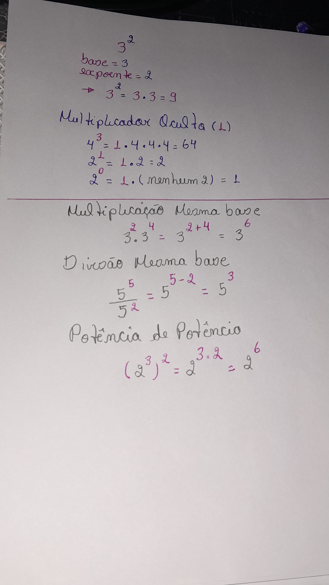

<!-- <!DOCTYPE html>
<html lang="pt-br">
<head>
    <meta charset="UTF-8">
    <meta name="viewport" content="width=device-width, initial-scale=1.0">
    <title>MODELO: Esqueleto de Revisão | CientificaTech</title>
    
    <link rel="stylesheet" href="style.css">
    <link rel="stylesheet" href="revisao.css">
    
    <link href="https://cdnjs.cloudflare.com/ajax/libs/font-awesome/6.0.0/css/all.min.css" rel="stylesheet">

    <script>
      window.MathJax = { tex: { inlineMath: [['$', '$'], ['\\(', '\\)']] } };
    </script>
    <script id="MathJax-script" async src="https://cdn.jsdelivr.net/npm/mathjax@3/es5/tex-mml-chtml.js"></script>
</head>
<body>

    <header style="background: #000; padding: 15px; text-align: center; color: white;">
        [SEU MENU AQUI]
    </header>

    <main class="container-mestre">

        <div class="topico-header">
            <p class="breadcrumbs">Física I > Mecânica > <span class="destaque">Leis de Newton</span></p>
            <h1>Capítulo 1: Aritmética</h1>
            <p class="intro">
                Nesta revisão, serão abordados os números naturais, com uma breve descrição dos números ordinais (posições) e cardinais (quantidades). Também serão revisados os números inteiros e os números racionais. Vale ressaltar que a dinâmica da revisão será baseada na apresentação da resolução de exemplos em forma de imagem e, ao lado, uma explicação objetiva do passo a passo, visando uma melhor compreensão.
            </p>
        </div>


        <section class="revisao-bloco">
            
            <div class="coluna-visual">
                <div class="zoom-container" onclick="abrirZoom(this)">
                    
                    
                    <div class="zoom-overlay">
                        <i class="fas fa-search-plus"></i> Ampliar Resumo
                    </div>
                </div>
                <p class="legenda-foto">Fig 1. Potenciação</p>
            </div>

            <div class="coluna-texto">
                <h2>1. Universo dos Números Inteiros</h2>
                <p>$$\mathbb{Z} = \{..., -3, -2, -1, 0, 1, 2, 3, ...\}$$</p>
                <p><strong>A Origem:</strong> O número <strong>zero</strong> funciona como o ponto de partida.</p>
                  
            <div>
 

        </section>
        <section class="revisao-bloco">
            
            <div class="coluna-visual">
                <div class="zoom-container" onclick="abrirZoom(this)">
                    
                    <div class="zoom-overlay"><i class="fas fa-search-plus"></i> Ampliar Resolução</div>
                </div>
            </div>

            <div class="coluna-texto">
                <h2>2. Adição</h2>
                <section>
  <p>
    <strong>Primeira lei da adição:</strong><br>
    0 + n = n (Somar o número zero a qualquer número natural é igual a ele mesmo)
  </p>

  <p>
    Exemplo:<br>
    0 + 2 = 2
  </p>

  <p>
    <strong>Segunda lei da adição:</strong><br>
    O <strong>sucessor</strong> de um número n é simplesmente n + 1.
  </p>

  <p>
    Explicando a segunda lei com o exemplo:<br>
    3 + 2 = 5
  </p>

  <p>
    O sucessor de 2 é 3.<br>
    O sucessor de 5 é 6.
  </p>

  <p>
    A segunda lei da adição fala o seguinte: eu pego o primeiro número, que é 3,
    e somo com o sucessor do segundo número (segundo número 2), ficando:
  </p>

  <p>
    3 + 3 = 6
  </p>

  <p>
    A partir dessas duas leis, a adição apresenta duas propriedades que são válidas
    para quaisquer números naturais.
  </p>

  <p>
    <strong>Propriedade comutativa da adição:</strong><br>
    A + B = B + A
  </p>

  <p>
    Os números podem ser reorganizados, que o resultado será o mesmo.
  </p>

  <p>
    <strong>Propriedade associativa da adição:</strong><br>
    <strong>Agrupamento</strong> não importa quando temos três ou mais números
  </p>

  <p>
    (A + B) + C = A + (B + C)
  </p>
</section>

            </div>

        </section>
        </main> <div id="modalZoom" class="modal-backdrop" onclick="fecharZoom()">
        <span class="botao-fechar">&times;</span>
        
        <div id="modalLegenda"></div>
    </div>

    <section class="revisao-bloco">
            
            <div class="coluna-visual">
                <div class="zoom-container" onclick="abrirZoom(this)">
                    
                    
                    <div class="zoom-overlay">
                        <i class="fas fa-search-plus"></i> Ampliar Resumo
                    </div>
                </div>
                <p class="legenda-foto">Fig 1. Potenciação</p>
            </div>

            <div class="coluna-texto">
                <h2>3. Multiplicação</h2>
            <p></p>
           <p>$$\underbrace{A}_{\text{Fator}} \times \underbrace{B}_{\text{Fator}} = \underbrace{C}_{\text{Produto}}$$</p>
           <p>Primeira Lei da Multiplicação (Elemento Absolvente)Esta lei estabelece que o produto de qualquer número natural pelo número zero será sempre zero. A RegraPara qualquer número natural $n$:$$0 \cdot n = 0 \quad \text{ou} \quad n \cdot 0 = 0$$</p>
           <p>Segunda Lei da Multiplicação (Elemento Neutro)Qualquer número multiplicado por $1$ é igual a ele mesmo.$$1 \cdot n = n$$Exemplo: $1 \times 5 = 5$. O número $1$ não altera o valor do outro fator.
            <p>Terceira Lei: Propriedade Distributiva da MultiplicaçãoEsta lei afirma que multiplicar um número pela soma de dois (ou mais) números é o mesmo que multiplicar esse número por cada parcela separadamente e, depois, somar os resultados.1. A Fórmula GeralPara quaisquer números naturais $a$, $b$ e $c$:$$a \cdot (b + c) = (a \cdot b) + (a \cdot c)$$</p>
           </p>
            </div>

        </section>
        <section class="revisao-bloco">
            


    <script>
        function abrirZoom(elemento) {
            const modal = document.getElementById("modalZoom");
            const imgModal = document.getElementById("imgNoModal");
            const legenda = document.getElementById("modalLegenda");
            
            // Pega a imagem que está dentro da div clicada
            const imgOriginal = elemento.querySelector('img');
            
            modal.style.display = "flex";
            imgModal.src = imgOriginal.src;
            legenda.innerHTML = imgOriginal.alt;
        }

        function fecharZoom() {
            document.getElementById("modalZoom").style.display = "none";
        }
    </script>

</body>
</html> -->